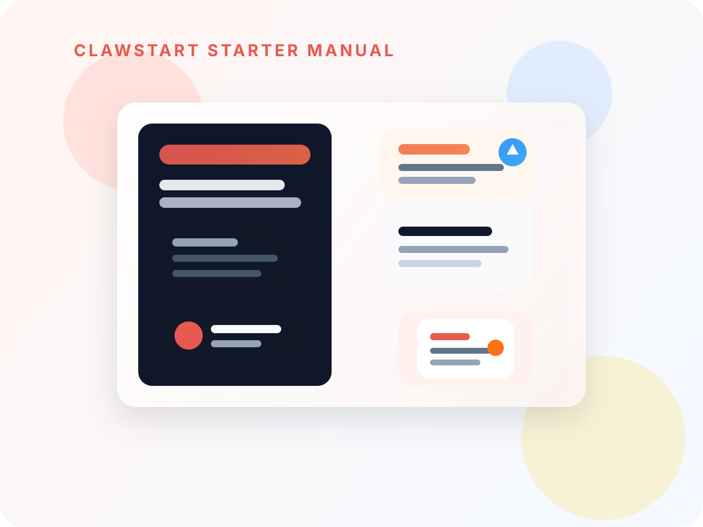
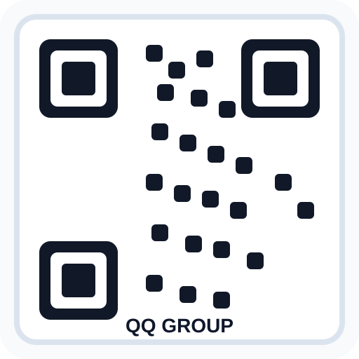

ClawStart 中文入门手册
OpenClaw 第一次从下载到会用
来源：useclawstart.com/guide-openclaw-starter.html
这份手册适合谁
适合第一次接触 OpenClaw、刚装好还不确定下一步做什么、或想把零散教程压成一条完整学习链路的人。
Starter Manual Cover
ClawStart OpenClaw 中文入门手册
这是一份面向第一次接触 OpenClaw 的用户准备的入门手册母版。你可以在线阅读，也可以直接导出成 PDF，发给团队、社群或未来的自己。
文档版本
v0.1 Beta
最近更新
2026-03-14
官方入口
useclawstart.com

第 1 步
先判断你的安装路径
普通用户优先走 Windows 或 macOS 一键包，不要第一步就陷进旧版命令行教程。Linux 当前主推荐路径是 Beta 安装脚本。
先确认自己是 Windows、macOS 还是 Linux
优先走一键包，不要先看历史命令行教程
成功标志：你已经拿到适合自己系统的安装路径
第 2 步
把模型和 API 先配稳定
第一次目标不是“模型最强”，而是“连接稳定”。中国大陆用户优先走国内在线模型，再考虑已有海外 API 或本地模型。
先选稳定的在线模型，再谈更强配置
API Key 优先确认可用、额度正常、网络可通
成功标志：你能发出第一条请求并正常收到回复
第 3 步
完成第一次真实任务
不要停在“已经装好了”。你需要立刻完成一次写作、办公或开发小任务，这样才算真正开始用起来。
优先选一个 5 分钟内能完成的小任务
先复制模板，不要自己从空白开始写
成功标志：你已经得到第一份可见成果
第 4 步
只装第一个最像你日常任务的 Skill
第一次不要装很多。优先从“适合小白”“无需 API Key”或者最像你日常场景的 Skill 开始。
优先选“适合小白 + 无需 API Key”的组合
装一个就测试，不要连装 5 个再一起排查
成功标志：你已经能调用第一个 Skill 完成真实动作
第 5 步
按你的身份扩展，而不是盲学全部功能
内容用户、办公用户、开发者和研究学习用户，最适合的下一步并不一样。先按自己的身份走对应路径，比“把所有教程看完”更有效。
附录
打印与 PDF 导出
这份手册已经按打印阅读做了整理。你可以直接在浏览器里导出一份 PDF，发给团队成员或保存到自己的资料库。
- 在电脑浏览器打开本页。
- 点击下面的“打印 / 导出 PDF”。
- 目标选择“存储为 PDF”或“另存为 PDF”。
- 建议使用纵向、背景图形开启，这样保留品牌样式和目录结构。
先把这份手册保存下来，再继续看其他教程
如果你已经走完这 5 步，可以把它导出成 PDF 作为自己的第一份 OpenClaw 中文手册，再继续去 Skills Hub 或教程中心扩展。
封底
保存这份手册后，下一步去哪里
如果你打算把这份 PDF 发给同事、朋友或社群成员，建议同时附上下面这些入口：官网、微信群、QQ 群和企业微信答疑入口。
适合实时交流安装和使用体验。

QQ 群适合公开讨论与问题互助。
 企业微信
企业微信
适合需要更快答疑的用户。
useclawstart.com 持续更新最新版手册与资源。